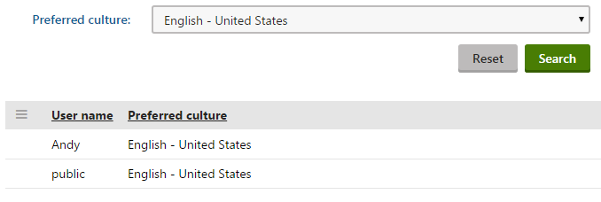

Creating custom UniGrid filters
If you need to add custom filtering options to listing pages that utilize a UniGrid, you can develop and assign your own filter controls.
Note: We strongly recommend using the default UniGrid filter for standard filtering scenarios. Only implement a custom filter control if the default filter cannot fulfill your requirements. To use the default filter, you only need to configure the filter element under the appropriate column elements in the UniGrid's definition.
For more information about the default UniGrid filter, see Reference - UniGrid definition.
To implement a custom UniGrid filter, you need to create a user control (.ascx file) in the Kentico project. We recommend storing your filter controls in one of the following folders:
~/CMSModules/<module code name> - if you are developing the filter as part of a custom module.
~/CMSGlobalFiles - general location recommended for files that are not associated with a specific module or site.
You can create two main types of custom filter controls for the UniGrid:
Creating filters for specific columns
The default UniGrid filter is a form that consists of multiple filtering fields. Each field typically provides filtering based on a different data column in the UniGrid listing.
To implement a custom filter control for a specific UniGrid column:
Create a user control within the Kentico project.
Build the filtering interface by adding elements to the control's markup.
Perform the following in the control's code behind:
Make the filter control inherit from the CMS.FormEngine.Web.UI.FormEngineUserControl class.
Override the Value property - get and set the value selected within the filter.
Override the GetWhereCondition() method - return a string containing an SQL where condition that performs the required filtering (use the Value property in the condition).
Add any other logic required by the filter (for example initialization of filtering options).
You can then assign the filter to a column in the definition of a UniGrid:
Find the <column> (XML) / <ug:Column> (markup) element representing the corresponding column.
Add a <filter> element under the column element.
Set the filter element's attributes:
type: custom
path: enter the path to your custom filter's user control file
<grid> <columns> <column source="SourceColumn" caption="Column name" > <filter type="custom" path="~/CMSGlobalFiles/CustomFilter.ascx" /> </column> ... </columns> ...</grid>The system inserts the custom filter for the given column into the UniGrid's overall filter. The custom filter can be combined with filters defined for other columns (both default and custom).
Custom filters that inherit from FormEngineUserControl provide automatic support for the UniGrid filter state management features (storing of the filter state for each user and resetting to the default state).
Setting parameters for custom column filters
If your custom filter control has properties that change its behavior, you can set their values directly in the UniGrid definition. This gives your custom filters greater flexibility, since you can use a different filter configuration for every instance of the UniGrid.
To assign values to the properties of custom filters in the UniGrid definition:
Add a <parameters> (XML) / <CustomFilterParameters> (markup) element under the given <filter> element.
Create a child <filterparameter> (XML) / <ug:FilterParameter> (markup) element for every property that you want to set.
Set the following attributes for each filter parameter:
name - identifier of the parameter (used when getting the value in the filter's properties).
value - the value assigned to the filter property. The type of the value attribute is a string, but you can use ValidationHelper methods to load the value as another type.
To load UniGrid parameter values in your custom filter, call the GetValue method (inherited from FormEngineUserControl) within the get code of your properties. Then use CMS.Helpers.ValidationHelper methods to convert the value to the appropriate type. See the Example for additional details.
The system assigns the values from the UniGrid definition into the filter's properties before displaying the page.
Fully replacing the default UniGrid filter
You can create custom filters that completely replace the entire default filter of the UniGrid (for all columns).
To develop the custom filter control:
Create a user control within the Kentico project.
Build the filtering interface by adding elements to the control's markup.
Make the filter control's class implement the CMS.FormEngine.Web.UI.IFilterControl interface (use the WhereCondition property to generate the filtering condition).
You can then assign the filter to a UniGrid:
Edit the UniGrid's definition.
Find or add the <options> (XML) / <GridOptions> (markup) element.
Enter the path to your custom filter's user control file:
XML: Add a <key name="FilterPath"> element under <options> with the path as the key's value.
Markup: Set the path using the FilterPath attribute of the <GridOptions> element.
The given UniGrid instance now uses your custom filter. Any filter settings for individual columns are ignored.
Example - Creating a custom user filter
The following example demonstrates how to create a custom filter for a UniGrid displaying user objects. The sample filter is intended for a specific column and limits which users are displayed based on their preferred content culture. The filter provides a dynamically loaded list of cultures for selection and can be configured to offer only cultures assigned to the current site or only designated UI cultures.
Start by developing the filter control:
Open your Kentico project in Visual Studio.
Expand the ~/CMSGlobalFiles folder (create the folder if it does not exist yet).
Create a new web user control named UserCultureFilter.ascx.
Add a CMSDropDownList into the control's markup to provide the filtering interface:
<%@ Register namespace="CMS.Base.Web.UI" assembly="CMS.Base.Web.UI" tagPrefix="cms" %><cms:CMSDropDownListID="drpCultures"runat="server"DataTextField="CultureName"DataValueField="CultureCode"/>Switch to the control's code behind and add the following code:
usingSystem;usingSystem.Data;usingSystem.Web.UI.WebControls;usingCMS.FormEngine.Web.UI;usingCMS.Localization;usingCMS.Helpers;usingCMS.SiteProvider;publicpartialclassCMSGlobalFiles_UserCultureFilter : FormEngineUserControl{/// <summary>/// Gets or sets the value selected within the filter./// </summary>publicoverrideobjectValue{get{returndrpCultures.SelectedValue;}set{drpCultures.SelectedValue = ValidationHelper.GetString(value,"");}}/// <summary>/// Indicates whether the filter only provides cultures that are assigned as content cultures to the current site./// </summary>publicboolCurrentSiteCulturesOnly{get{// Gets the value from the matching <filterparameter> element in the UniGrid's XML definitionobjectparameterValue = GetValue("currentsiteculturesonly");returnValidationHelper.GetBoolean(parameterValue,false);}set{SetValue("currentsiteculturesonly", value);}}/// <summary>/// Indicates whether the filter only provides designated UI cultures./// </summary>publicboolUICulturesOnly{get{// Gets the value from the matching <filterparameter> element in the UniGrid's XML definitionobjectparameterValue = GetValue("uiculturesonly");returnValidationHelper.GetBoolean(parameterValue,false);}set{SetValue("uiculturesonly", value);}}/// <summary>/// Loads the filtering options during the initialization of the control./// </summary>protectedoverridevoidOnInit(EventArgs e){base.OnInit(e);// Only initializes the culture options on the first page loadif(IsPostBack ==false){// Prepares a where condition for loading cultures based on the filter's parametersstringwhere = String.Empty;// Adds a condition for loading only cultures assigned to the current siteif(CurrentSiteCulturesOnly){where ="CultureID IN (SELECT CultureID FROM CMS_SiteCulture WHERE SiteID = "+ SiteContext.CurrentSiteID +")";}// Adds a condition for loading only designated UI culturesif(UICulturesOnly){if(!where.Equals(String.Empty)){where +=" AND ";}where +="CultureIsUICulture = 1";}// Loads the cultures from the Kentico database based on the where conditionDataSet ds = CultureInfoProvider.GetCultures(where);// Binds the loaded cultures to the filter's drop-down listdrpCultures.DataSource = ds;drpCultures.DataBind();// Adds the '(any)' and '(default)' filtering optionsdrpCultures.Items.Insert(0,newListItem("(default)",""));drpCultures.Items.Insert(0,newListItem("(any)","_any"));}}/// <summary>/// Generates the SQL Where condition used to limit the data displayed in the connected UniGrid./// </summary>publicoverridestringGetWhereCondition(){stringfilterCultureCode = Valueasstring;// Returns an empty condition if the special (any) option is selected in the filterif(filterCultureCode.Equals("_any")){returnString.Empty;}// Returns a condition for loading users whose preferred content culture matches the filter's value.return"(PreferredCultureCode = N'"+ Value +"')";}}
The filter control is now ready to be assigned to any UniGrid component that works with user objects (and includes the PreferredCultureCode column in the loaded data). For example, the following UniGrid definition uses the custom filter for a column, and sets the filter's CurrentSiteCulturesOnly and UICulturesOnly parameters.
<?xml version="1.0" encoding="utf-8"?><grid> <objecttype name="cms.user" columns="UserID, UserName, PreferredCultureCode" /> <columns> <column source="UserName" caption="$general.username$" wrap="false" /> <column source="PreferredCultureCode" caption="Preferred culture" externalsourcename="#culturename" width="100%"> <filter type="custom" path="~/CMSGlobalFiles/UserCultureFilter.ascx" defaultvalue="_any"> <parameters> <filterparameter name="CurrentSiteCulturesOnly" value="true" /> <filterparameter name="UICulturesOnly" value="false" /> </parameters> </filter> </column> </columns> <options> <key name="DisplayFilter" value="true" /> <key name="FilterLimit" value="0" /> </options></grid>If you view the output of the UniGrid, you can use the custom filter to control which users are displayed. The filter offers culture options according to the parameters that you configured in the UniGrid definition.

UniGrid displaying users with the custom culture filter